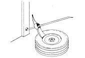

Before Barbara Black freezes her bags of freshly baked bread and muffins, she puts one end of a drinking straw into each sack and gently sucks the air out. Then the Woodbridge, Virginia baker twists the ties to seal the bags . . . and pops the goodies into the freezer. Barbara claims the extra airtightness helps keep her frozen treats fresh.
Next time you're looking for an easy way to "pop" the bead from a tire rim, you might try Dale Isackson's trick. Dale, a reader from Two Harbors, Minnesota, uses a pick-mattock - minus the handle - for the task. He first runs a 5-foot steel bar through the hole provided for the handle of the tool . . . and then places one end of the bar in a hole in his garage door frame. By placing the blade between the rim and the bead, and then taking the valve out of the valve stem, Dale can pop the tire's bead by simply pressing down on the other end of the steel rod.
Mary Markland makes her own breast shields by folding a cloth diaper into six to eight thicknesses. The Sebring, Floridian then cuts out a circle, using pinking shears, and sews the multiple layers together. Mary says the shields are a help when she's breastfeeding, because they prevent milk from staining her clothing.
Another of MOM's readers - Mary Hagemann of Douglas, Wyoming - also sent us instructions for making homemade shields. This Mary uses an old dish towel, and sandwiches a layer of clear plastic wrap between two terry cloth circles. Once they've been sewn together with a lock stitch, Mary reports, the shields will withstand several machine washings.
If you scorch a pot of pinto beans, peas, or some other legume, don't despair. Instead, take a tip from Jeanne Bolick of Hickory, North Carolina. Jeanne simply adds a peeled raw potato to the pot . . . which, she says, quickly absorbs the scorched flavor. (An uncooked spud will also soak up the excess salt from an overly seasoned pot of beans.)
When Carol Saturensky-Young cans fruits, she prefers not to use the sugary syrups most folks recommend. Instead, the Merlin, Oregon reader cans her apples, peaches, and berries in unsweetened apple juice. The juice can be bottled, filtered or not filtered, frozen or fresh, cider or juice, or even diluted slightly. She never adds sugar or honey, although occasionally she includes a little lemon juice. Carol has found that the apple "nectar" makes a great canning syrup, and combines with the flavor of the fruit in a most pleasing way! [EDITOR'S NOTE: You may well have to increase your processing time because of the lack of sugar syrup's preserving action.]
"Whenever you order merchandise through the mail, write the address of the firm you're dealing with on the back of the check," recommends Holly Hughes of Oakdale, Connecticut. "Then, if there's any problem with the merchandise - or if you don't receive it - you'll have the information you'll need in order to write the company there on the canceled check . . . which can save a lot of frustration."
Broken tool handles can be useful around the homestead, according to Kenneth Scharabok of Wright Patterson Air Force Base in Ohio. Ken has - for instance - used the good hardwood from two broken shovel handles to make a grip for a froe . . . a replacement handle for a crosscut saw . . . and a shaft for a three-pound hammer.
Ashley Sweda is a hunter, fisherman, and trapper by trade. And the Tionesta, Pennsylvanian has found a way to make use of all parts of the animals he hunts and traps: The Keystone Stater simply buries any unused portions of the carcasses in his garden. The extra nitrogen, bone meal, and other nutrients have proven their worth in the past two harvest seasons. Ashley says that the neighbors looked on with a wary eye for a while, but were won over when they received part of his garden's ample harvest.
"Hospital stays - especially extended ones - can be terribly depressing. If you know someone going in for a long while, here's a way to add a little sunshine to his or her stay," write Sue Wylly and Dolores Dux of Savannah, Georgia. "Go through every magazine you can find and cut out all the coupons offering free samples . . . then send them in with your friend's name and hospital address. (You may have to include a small handling charge in some cases.) Soon all sorts of mysterious little boxes and envelopes will start arriving, containing everything from shampoo to tulip bulbs to pet food . . . and the patient will be diverted from thoughts of his or her illness for a while."
Once each month, Cindi Workman mixes up a solution of two teaspoons of regular household ammonia and one gallon of lukewarm water, and feeds the liquid to her indoor plants. According to the Bancroft, Michigan reader, her leafy friends green up . . . stand nice and straight . . . and put out lots of new growth. Sound strange? Well, Cindi says that some farmers invest a good bit of money in the anhydrous ammonia they use on their crops!
You can clean your washing machine by filling it with warm water and adding a gallon of distilled (white) vinegar to it, according to Mary Cucher of Memphis, Tennessee. Mary simply runs the liquid through an entire wash cycle . . . and finds that the vinegar effectively cleans all of the hoses, removing soap scum.
Patricia Blundell and her husband have come up with a way to keep neighborhood pets and wild marauders out of their garbage while the couple accumulates enough noncompostable trash to warrant a trip to the dump. The Lakebay, Washington residents store their tied plastic garbage bags in a wooden utility trailer that's equipped with wire and insulators and hooked to a battery-powered fence charger. One zap convinces most wandering animals to leave well enough alone. (Pat tells us her dog won't even walk on that side of the house!) The charger is disconnected from the trailer whenever the vehicle is moved or emptied, but the wire stays on. The Blundells report that they've lent the fence charger to friends and neighbors who've installed similar setups around their garbage cans. A few weeks with the zapper in place is usually enough to educate most animals to "steer clear".
Through the years we've all probably discovered a few practical, down-home, time-tested solutions to the frustrating little problems of everyday life. Why not share your best "horse sense" with the rest of MOTHER's readers? Send your suggestions to Down-Home Country Lore, P.O. Box 70, Hendersonville, North Carolina 28791. A one-year subscription - or a one-year extension of an existing subscription - will then be sent to each contributor whose tip is printed in this column - MOTHER.
|
 |
|
|